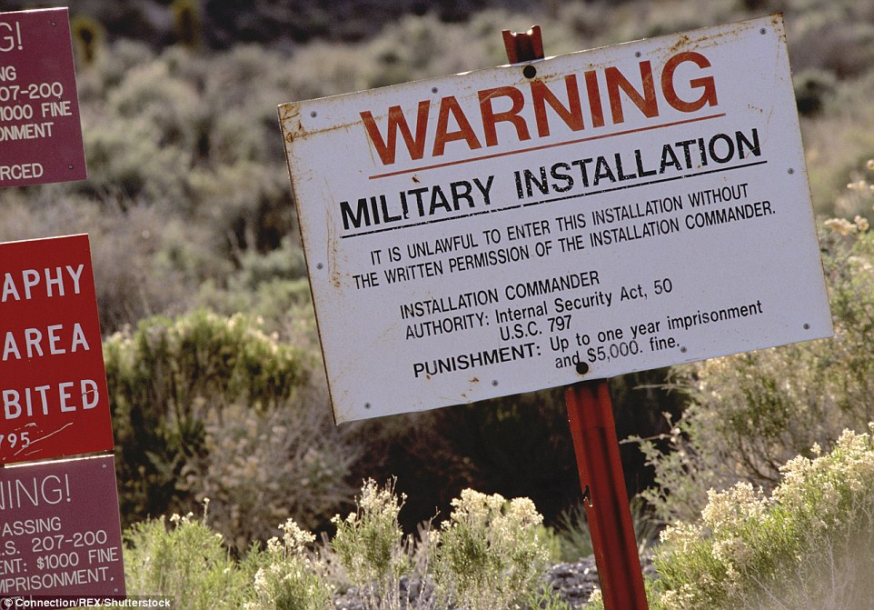

According to some theories, the government has a secret military base called "Area 51" where they test experimental aircrafts and alien objects from outerspace. There are stories of autopsies performed by government officials on dead aliens. The theory also goes on to claim that anyone trying to uncover the governments experiments and secrets about aliens would face consequences. Anyone who would try to find the truth would receive a visit from a group of intimidating officials in dark suits. These individuals are known as the Men in Black. The U.S. government repeatedly denied having any information about extraterrestrials, but many theorists dismissed the government's responses. The United States CIA has acknowledged the existence of Area 51 though, in a document about the U-2 spy plane [source: CNN]. The document didn't suddenly blow the lid off of alien technology. Instead, the paper confirmed what many writers have said about the military base -- it was a testing ground for top-secret military aircraft.
After an increase in UFO sightings in 1952, the CIA concluded that “there is a remote possibility that they may be interplanetary aircraft,” and that it was necessary to investigate each sighting.
